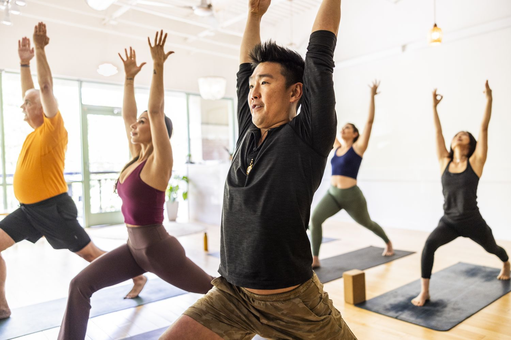

So, what exactly is a hobbyist and how can you know if you are one? Well, the answer to that is very simple. Do you have something that you like doing? It can be any sport, studying, programming, yoga or just about anything. If the answer to that question is yes, then congratulations, you are officially a hobbyist! You can now feel free to visit our other pages, including the user profiles, forums and resources.
Description

